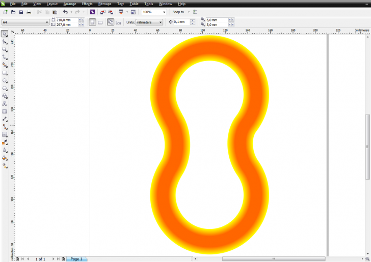

Градиент/прозрачность по дуге/окружности
mnem0nik / 10.01.2013, 13:39
Форум:
Версия программы:
16.0.0.707
Здравствуйте!
Хочу задать вопрос относительно заливок и прозрачности.
Вот есть у меня сложная фигура (относительно квадрата/круга) и я хочу задать ей плавный градиент из центра фигуры, чтобы он плавно шел в стороны относительно самой фигуры. То есть, если я задам радиальную заливку, то по самым краям фигуры будет хорошо проходить градиет, а вогнутая часть будет более насыщенна внутренним цветом.
Мне надо каким-либо образом "загнуть" градиент, чтобы он был не только радиальный, канонический и т.п., а шел плавно по сложной фигуре.
Я прикрепил файл с заливкой. Вот надо чтобы градиент вогнутой части соответствовал градиенту верхней части. Сейчас там больше красного (на вогнутой стороне).
Надеюсь я понятно объяснил)
Blend (Перетекание) по пути
путь это - центральная линия вашей фигуры
- по этому пути пустите ....э-э-э ... штук 20 (для начала, потом число скорректируете) кругов,
начало и конец пути, а также начальный и конечный цвет - это на ваше усмотрение
второй вариант -более "извращенный"
меш-заливка с последующим помешением в поверклип, которым ваша фигура и послужит
Зачем так сложно? Обычным контуром все делается - аналогичный пример тут рассматривали недавно про отрисовку звеньев цепи - я правильно проблему понял?
MBK прав, такие переходы цвета проще всего делать "контуром"
Особо не старался повторить фигуру, но для примера "как выйдет" - сойдет.

themadman,
а я и не против :)
dastin, а я в свою очередь и не спорил, просто подтвердил мысль :)